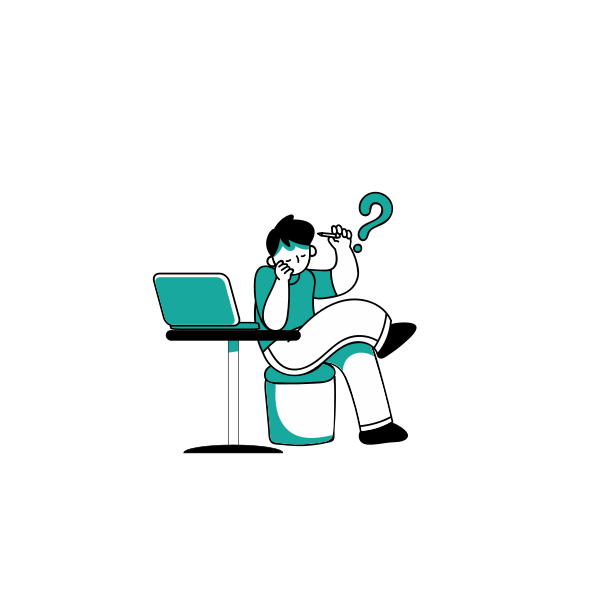

Hola!
Binusian
Tertarik untuk bergabung menjadi Mentor atau Mentee BSLC?

Mentor
Mentoring merupakan program kegiatan belajar mengajar antara mentor dan mentee dari BSLC yang dilakukan dalam grup kecil berisikan 5-10 mahasiswa. Mentoring BSLC bisa dianggap sebagai bimbel belajar, mentor yang akan mengajar adalah kakak tingkat yang tentunya memiliki pengalaman mengenai materi kuliah semester awal yang akan diajarkan kepada mahasiswa adek kelas semester 1/2. Mentee juga bisa mendapatkan tips dari mentor saat mengikuti kegiatan mentoring.

Mentee
Bagi kalian yang merasa ingin menambah pengetahuan atau mungkin merasa kurang paham dalam memahami materi saat berkuliah. Kalian tenang saja karena BSLC membuka kesempatan bagi mahasiswa Binusian semester 1/2 untuk bergabung sebagai mentee. Nantinya kalian sebagai mentee akan diajar oleh mentor yang merupakan kakak kelas kalian. Jadi tunggu apalagi, mari daftarkan diri kalian menjadi mentee BSLC.
Kenal lebih lanjut mengenai BSLC
Ada pertanyaan, saran atau kritik yang ingin disampaikan? Kirim pesanmu
di sini
